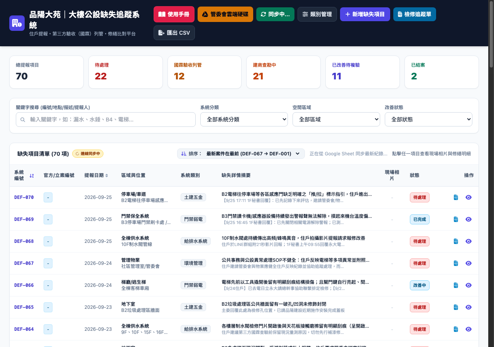
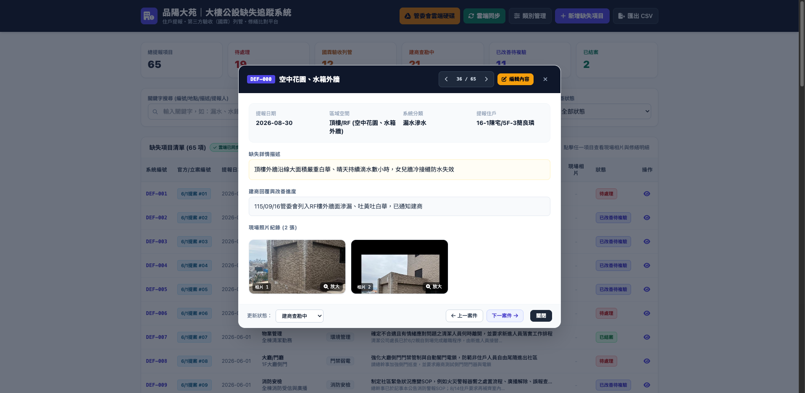
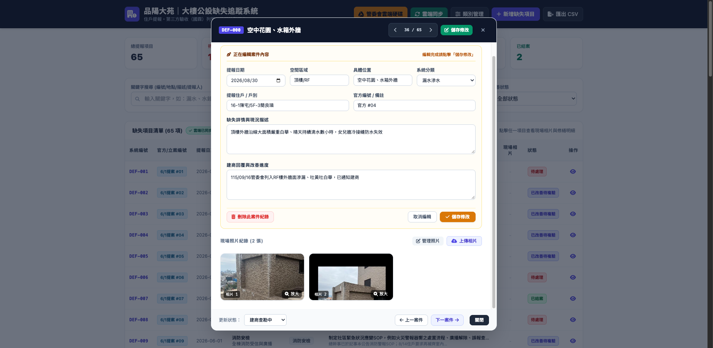
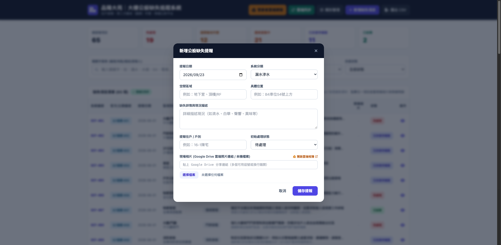
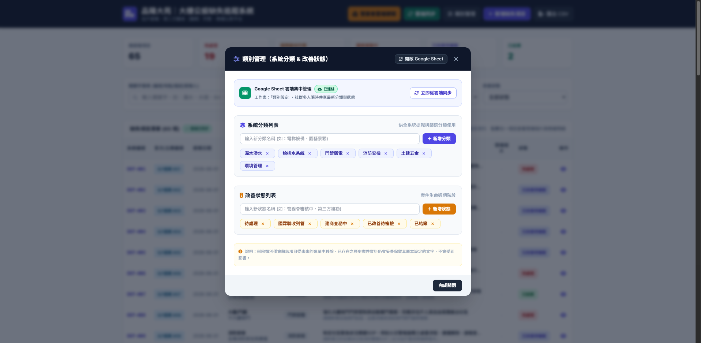
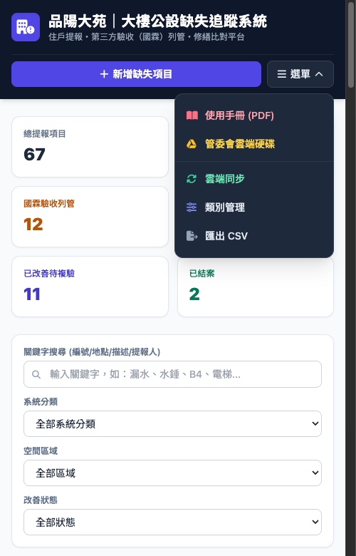
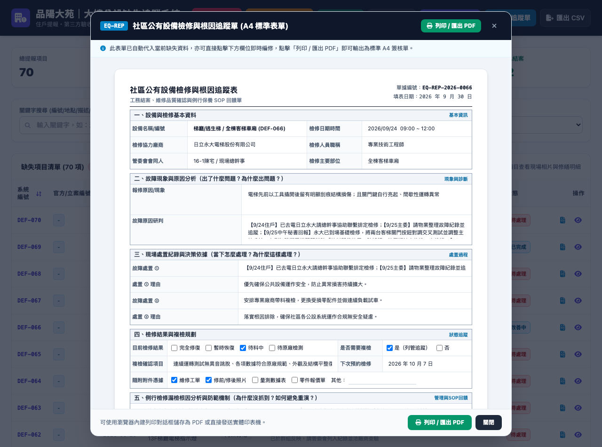
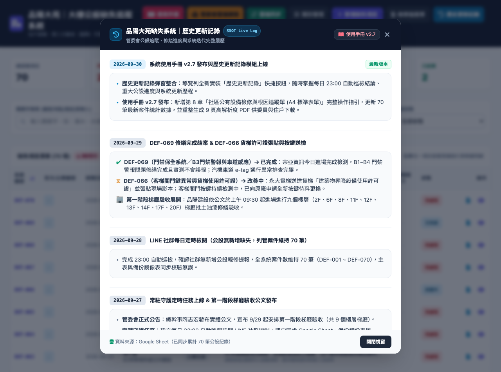

系統宗旨：專為品陽大苑管委會、全體住戶及第三方公設查驗團隊（國霖機電）打造之公設瑕疵管制作業平台。系統整合了住戶提報、現況照片留證、缺失修繕進度追蹤，並直接連動 Google 雲端試算表與雲端硬碟，達到無死角的多人即時協作。
1. 系統首頁與全域總覽 (Dashboard)
進入系統後，頁面由頂部控制導覽列、中間狀態儀表卡片 (KPI)、多維度複合篩選列以及缺失項目清單總表四大區塊組成：

▲ 圖 1：品陽大苑缺失追蹤系統首頁架構（頂部功能鍵、KPI統計、即時篩選、最新置頂排序與案件總表）
主要操作區塊說明：
- 頂部控制導覽列：
- 📖 使用手冊：主畫面直接點擊即刻在新分頁開啟或下載本完整圖文 PDF 說明書。
- 管委會雲端硬碟：一鍵快速直達管委會 Google Drive 存證資料夾。
- 雲端同步：強制自 Google Sheet 抓取全社區最新提報缺失與類別設定。
- 類別管理：增刪或微調系統分類標籤與修繕進度狀態。
- + 新增缺失項目：開啟快速表單登記現場新瑕疵與上傳照片。
- 🕒 歷史更新記錄：開啟全系統歷史更新履歷彈窗，即時查看每日巡檢結論、重大修繕結案與版本歷程。
- 匯出 CSV：一鍵匯出當前所有篩選結果為 Excel/CSV 檔案供管委會會議彙報。
- 📱 介面清爽與行動優化：導覽列經過精簡去冗餘，將「檢修追蹤單」整合於清單每筆案件右側與詳情彈窗內，避免版面擁擠；手機版自動切換為「＋ 新增」與「☰ 選單 ⌵」抽屜選單。
- KPI 即時卡片：即時統計總提報項目數（目前累計 71 項，最新包含 DEF-071 第一階段梯廳驗收列管案），以及「待處理」、「國霖驗收列管」、「建商查勘中」、「已改善待複驗」、「已結案/已完成」之分項件數。
- 多維度篩選與最新案件置頂排序：
- 多條件過濾：支援「關鍵字搜尋（案號/位置/描述/提報人）」、「系統分類」、「空間區域」及「改善狀態」即打即顯交叉比對。
- 最新案件置頂（預設）：系統進入預設自動將編號最大、最新提報的案件排在最上方（DEF-071 → DEF-001），方便第一時間掌握最新修繕。
- 多維度排序切換：清單上方提供「排序下拉選單」，並支援直接點選表格「系統編號」或「提報日期」表頭，瞬間切換正反向排序。
2. 雲端同步機制與更新差異解析
系統採用現代化單一真實來源 (Single Source of Truth, SSOT) 架構，讓網頁與 Google Sheet 試算表達成無縫自動連線：
| 機制類別 |
運作技術與連線流程 |
核心特性與適用情境 |
| 點擊頂部「🔄 雲端同步」 |
透過 Google Visualization API 旁路連線 Google Sheet，強制附加時間戳（無快取干擾），以 SPA 局部局部非同步更新記憶體。 |
僅更新資料、保留目前畫面狀態。搜尋關鍵字與篩選不會遺失，速度最快、消耗流量最低；適合隨時查看現場修繕最新進展。 |
| 瀏覽器 Refresh (F5 / 重新整理) |
向伺服器重新請求下載完整的 HTML 架構、CSS 樣式表與 JavaScript 程式碼。 |
更新網頁程式本體。會重置當前搜尋與已打開的彈窗；適合系統功能改版、新增按鈕或樣式微調後載入最新網頁代碼。 |
| macOS 系統 launchd 守護服務 |
註冊於 macOS 系統層底層服務（com.jktai.pinyang.defect_tracker），每天 23:00 自動定時喚醒。 |
電腦關機重開後 100% 自動恢復。自動全量鏡像備份至「公設缺失備份」工作表，並自動校對同步 GitHub Pages，免手動介入。 |
3. 案件詳情檢視與照片放大 (Detail Modal)
在總表中點擊任一案件列或右側 檢視 圖示，即可開啟案件詳細修繕資訊窗：

▲ 圖 2：案件修繕履歷檢視窗（含提報人、官方追蹤編號、改善進度及現場存證相片輪播）
- 案件定位切換：可點擊頂部「上一案」、「下一案」快捷鍵在同篩選結果內循序切換，無須頻繁進出。
- 照片輪播與燈箱放大 (Lightbox)：點擊現場相片縮圖即可呼叫全螢幕高清燈箱，支援手機左右滑動手勢與鍵盤切換。
- Ultra-HD 向量級公文原件支援：針對重要實體公文（如 DEF-071 第一階段梯廳驗收公告），全面導入 1200×1700 超高解析圖檔，放大 10 倍依然極致銳利，細節章印一覽無遺。
- 改善進度追蹤：清楚記載建商目前修復處置作為、工班施作進度或第三方查驗結論。
4. 案件內容編輯與相片雲端管理
在詳情窗點擊右上方 編輯內容 按鈕，介面會切換至雙欄編輯工作台：

▲ 圖 3：案件編輯模式（左欄修改缺失與回覆、右欄支援本機照片上傳、剪貼簿直貼與快速刪除）
現場照片增刪與剪貼簿貼上功能：
- 1從剪貼簿直接貼上相片（快捷鍵最強大）：只要在 LINE、電腦截圖工具或手機截圖按下「複製」，在案件編輯工作台視窗中直接按下鍵盤
Ctrl+V（Windows）或 Cmd+V（Mac），或點擊「貼上剪貼簿相片」按鈕，截圖即刻轉換為預覽圖片，無須另存檔案！
- 2電腦/手機本機選取檔案：點擊「上傳相片」選取拍攝圖檔，系統會於前端進行智慧等比壓縮（最長邊 1600px，兼具清晰畫質與極速傳輸）。
- 3刪除相片：滑鼠懸停於照片右上角垃圾桶或點擊「管理照片」即可單張清除；亦可「全部刪除」。
- 4雙向寫入雲端：點擊右下角「儲存修改」後，新上傳或貼上的照片會自動同步至 Google Drive 雲端資料夾，並將直連網址寫入 Google Sheet 第 K 欄，跨裝置即刻一致同步。
刪除案件保護：左下角設有「刪除此案件紀錄」功能，僅供誤報或完全無效案件使用。點擊後系統會跳出確認警告，確認後將同步從網頁及 Google Sheet 徹底抹除該筆紀錄。
5. 新增公設缺失作業流程 (Create Defect)
當巡檢人員或住戶在公共空間發現新瑕疵時，點擊頂部 + 新增缺失項目 開啟表單：

▲ 圖 4：新增缺失表單（支援自動編號、樓層空間、瑕疵描述、剪貼簿直貼與選檔預覽）
- 系統編號：系統依現有資料庫自動流水編排（例如目前最新為
DEF-068）。
- 空間與位置：詳列「空間區域」（如地下室、頂樓/RF、梯廳）與「具體位置」（如 B2停車場15號車位旁連續壁）。
- 系統分類：選定主要瑕疵性質（漏水滲水、給排水系統、門禁弱電、消防安檢、土建五金、環境管理）。
- 現場相片上傳與剪貼簿貼上：
- 可直接點擊「貼上剪貼簿相片 (Ctrl+V)」或直接按快捷鍵貼入 LINE 中的報修截圖。
- 亦可點選本機圖檔，下方會立即呈現縮圖預覽並提供刪除叉叉，確認無誤後點擊「儲存提報」即自動上傳登錄。
6. 系統分類與改善狀態自訂管理 (Configuration)
點擊頂部 類別管理 按鈕，管委會委員可隨時依社區需求自訂分類標籤：

▲ 圖 5：類別與狀態管理視窗（自訂各項工程分類標籤與流程狀態）
- 動態擴充：可隨時新增例如「景觀植栽」、「公設弱電」等新類別，或調整自訂狀態流程。
- 雲端雙向同步：所有類別異動均同步記錄至 Google Sheet 試算表之「類別設定」工作表中，其他裝置重整後同步生效。
7. 手機行動版操作指南 (Mobile Interface)
為方便管委會委員與住戶在現場巡檢時以手機瀏覽，系統針對行動裝置窄螢幕進行深度響應式（RWD）優化：

▲ 圖 6：手機版精簡導覽列與「☰ 選單 ⌵」下拉浮動選單
- 首頁版面精簡：頂部自動收攏多餘按鈕，僅保留核心的「＋ 新增缺失項目」與「☰ 選單 ⌵」，釋放更多垂直空間便於閱讀列表與照片。
- 下拉式功能選單：
- 點擊「☰ 選單 ⌵」即可隨時展開或收合浮動功能面板。
- 內建：使用手冊 (PDF)、歷史更新記錄、管委會雲端硬碟、雲端同步、類別管理、檢修追蹤單與匯出 CSV。
- 點選任意項目或點擊視窗空白處，選單會自動智慧收合。
- 手機貼圖與拍照：支援手機直接拍照上傳、選取相簿照片，或於 LINE/剪貼簿複製圖片後點擊貼上，行動巡檢回報更便捷。
8. 社區公有設備檢修與根因追蹤單 (A4 標準表單)
為落實管委會標準表單作業規範，本系統全面內建「社區公有設備檢修與根因追蹤單」（單號規範：EQ-REP-YYYY-xxxx），專供重要公設設備檢修、廠商回覆、管委會內部簽核與根因防範作業使用：

▲ 圖 7：社區公有設備檢修與根因追蹤單（自動帶入案件資料、支援現場即打即改、六大維度標準化檢修表單）
功能特色與六大維度架構：
- 多重便捷入口：
- 總表捷徑：點擊清單每一列最右側操作欄的 📄 單據圖示，立即帶入該案件自動生成單據。
- 案件詳情 Header：檢視任一案件時，頂部直接提供「檢修追蹤單」按鈕。
- 全域導覽列：頂部選單與手機下拉選單隨時可開啟「檢修追蹤單」，並支援快速切換任意案件。
- 自動化欄位智慧推斷：
- 單據編號：自動轉換為社區標準規範，如
DEF-066 自動編碼為 EQ-REP-2026-0066。
- 協力廠商智慧推斷：系統依空間與系統分類自動帶入專業廠商（如日立永大電梯、國霖機電、水電工務等）。
- 現象與處置完整帶入：報修現象、建商歷次改善進度、會同人員皆自動填入對應欄位，大幅減少重打文書時間。
- 六大標準管理維度：
- 設備與檢修基本資料：設備空間名稱、日期時間、協力廠商、檢修人員職稱及管委會會同人。
- 故障現象與原因分析：報修原由、初步研判與現場實際狀態。
- 現場處置紀錄與決策依據：第一時間處置作為與決策理由（如保障公共安全、安排後續備料）。
- 檢修結果與複檢規劃：完全修復/暫時恢復/待料中/待原廠檢測、是否列管複檢、下次預約時間及附件憑據清單。
- 例行檢修漏檢根因分析（管理與 SOP 回饋）：可直接於線上勾選制度、人員或巡檢盲點，並填寫長效防範對策。
- 多方確認與簽核軌跡：預設「檢修工程師」、「社區總幹事」、「設備規劃委員」、「主任委員」四方橫向簽名蓋章欄位。
- 雙向資料同步回寫機制（重大升級）：
- 現場編修即時存檔：在追蹤單右上角或表單最底部點擊「💾 儲存並同步回系統」，可將現場修改的廠商資訊、現象說明、處置進度與根因對策直接回寫存入全域案件資料。
- 檢修結果自動連動案件狀態：勾選「完全修復並正常運作」且確認無須複檢時，系統自動將該缺失狀態連動為「已結案」；若勾選暫時恢復或待料列管，則連動為「待複驗」。
- 進度軌跡結構化自動附加：處置紀錄若有新增內容，系統會自動在案件的「歷次改善進度」追加帶有日期的
[現場檢修記錄] 軌跡，確保處置歷程完整保留。
- 即時全域 UI 刷新：儲存完成後，主畫面清單與詳情彈窗立即同步刷新，無須手動重新整理頁面。
- 第四區塊單選互斥防呆：
- 檢修結果之「完全修復 / 暫時恢復 / 待料 / 待原廠」全面實裝單選互斥邏輯，杜絕重複勾選；當切換選項時，後續「複檢」與「預約時間」自動智慧預設，防範人為疏失。
- 極致 A4 單頁列印與 PDF 檔名規範化（Mac / iPad 雙向完美支援）：
- 100% 版面一致：徹底解決列印模式下雙欄折行堆疊問題，以精確 CSS Print 規則確保螢幕所見與列印結果 1:1 左右對稱。
- Page 1 of 1 單頁保證：內建微縮版面設計，徹底杜絕跨頁與空白第 2 頁。
- PDF 儲存自動命名：點擊「列印 / 匯出 PDF」時，系統動態將網頁標題代換為
[單據編號]_[列印日期]（例如 EQ-REP-2026-0066_20260930.pdf），儲存 PDF 時自動成為標準檔名，列印結束後秒級還原網頁原始標題。
9. 歷史更新記錄模組 (Changelog Live Log)
為方便管委會委員、監委與全體住戶隨時檢閱社區公設修繕的最新里程碑、排程巡檢結論與系統改版紀錄，系統於頂部導覽列全面實裝「歷史更新記錄」功能：

▲ 圖 8：歷史更新記錄檢視視窗（整合每日巡檢進度、重大案件修繕結案與版本歷史時間軸）
主要功能與資訊維度：